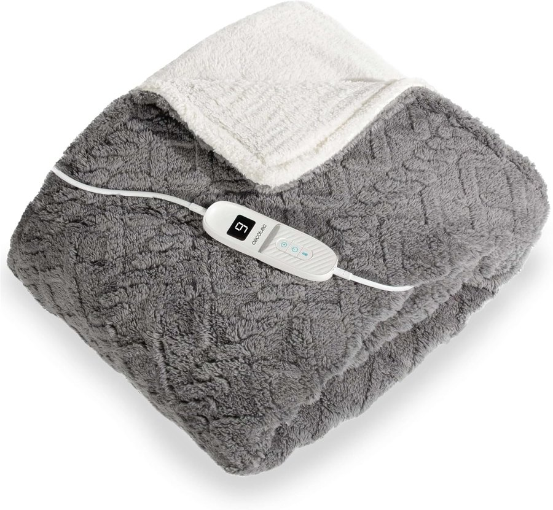
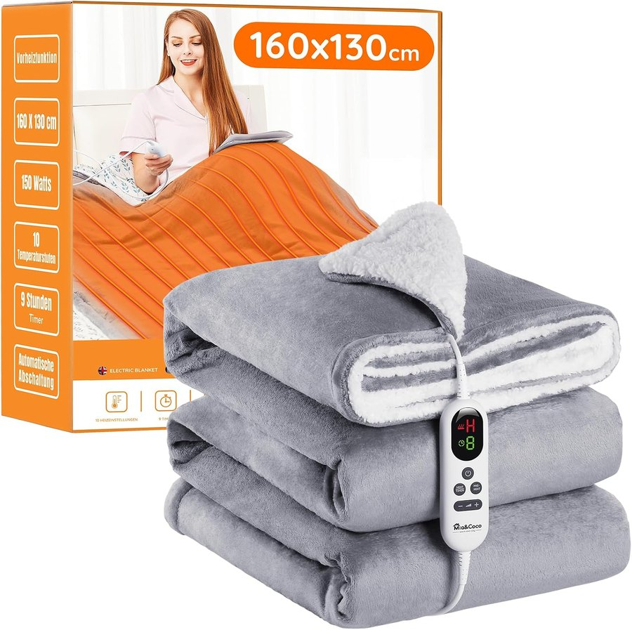
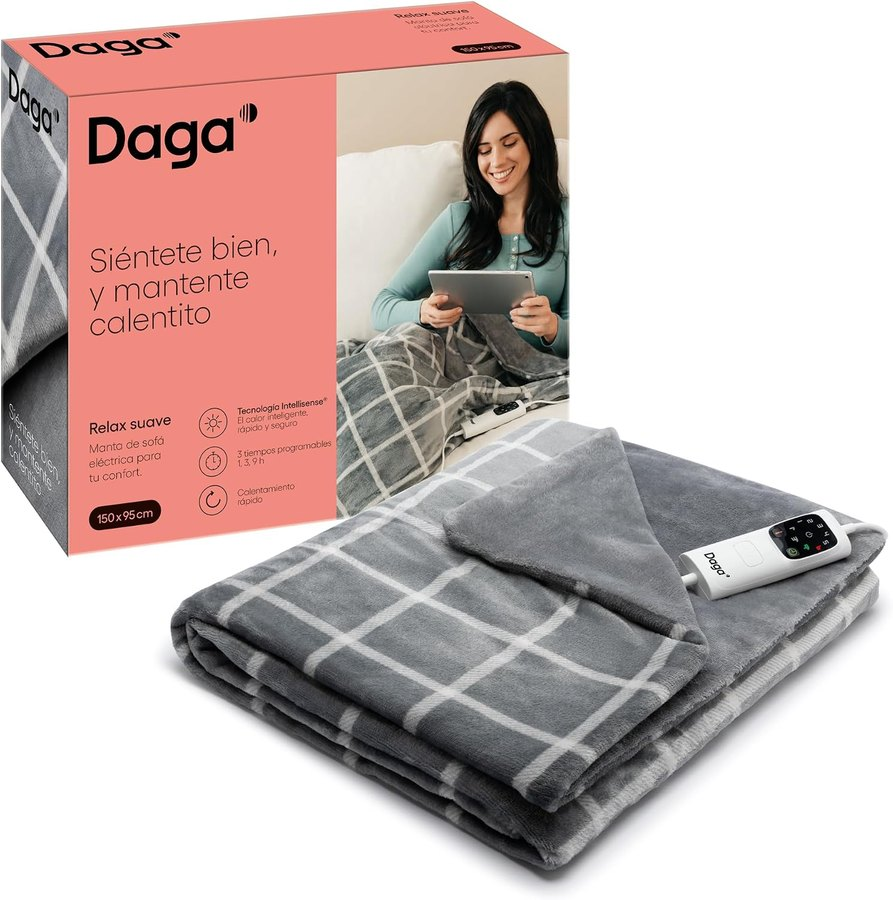
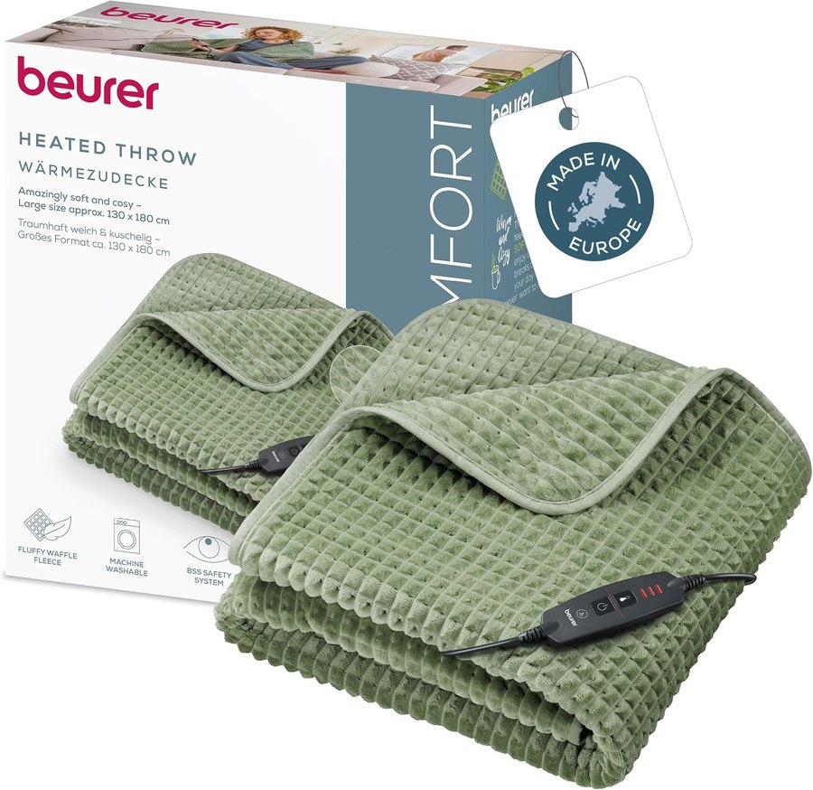
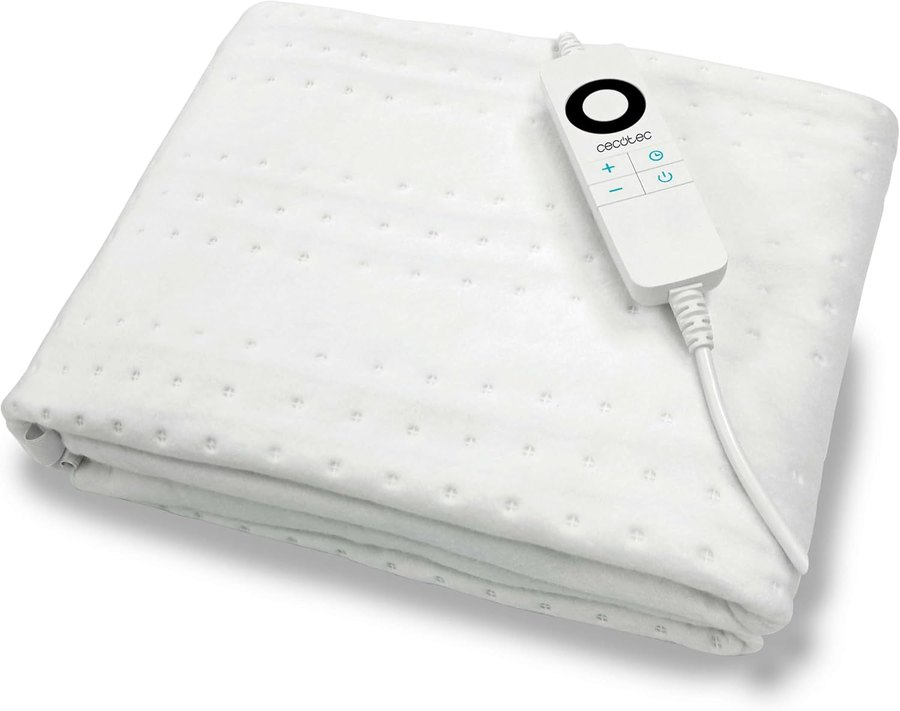

Una hora de calefactor de 2.000 W cuesta lo mismo que más de 6 noches con una manta de 160 W encendida 2 horas, con el precio de la luz de hoy. Por eso buscamos mantas eléctricas en Amazon.es, enviadas por Amazon y con 4,3 estrellas o más.
Son cinco, de 22,90 a 69,99 €. Lo que la ficha no dice, lo dejamos en sin dato.
La manta calienta la cama, no la habitación: gasta céntimos, pero no sustituye a la calefacción.
Aviso de afiliados: En calidad de Afiliado de Amazon, obtenemos ingresos por las compras adscritas que cumplen los requisitos aplicables. Si compras desde nuestros enlaces, no te cuesta más. Cada oferta indica quién la vende y quién la envía. Precios y disponibilidad cambian: revisa la ficha de Amazon antes de comprar.
- La mejor comprobada: Cecotec Sherpa (41,90 €). Da 160 W, temporizador y 3 años de garantía en la ficha.
- La más vendida: Mia&Coco (39,99 €), con 8.581 opiniones. La ficha no da la potencia.
- Marca y seguridad: Beurer Waffle (69,99 €), con 3 años de garantía.
- Para gastar poco: calientacamas Cecotec ThermalUnder (22,90 €).
Las cinco que hemos elegido

Cecotec HeatConfort ThermalBlanket Sherpa, 160 × 130 cm
- Potencia: 160 W · 9 niveles de temperatura
- Temporizador: apagado automático hasta 180 minutos, con protección contra sobrecalentamiento
- Lavable a máquina quitando el mando · 1,75 kg
- Garantía del producto: 3 años, según la ficha
- Valoración: 4,5 de 5 (247 opiniones)
A favor: Es la única de la lista que da a la vez la potencia, el temporizador y la garantía del fabricante.
En contra: El temporizador llega solo a 3 horas y tiene menos opiniones que otras.

Mia&Coco, 160 × 130 cm, 10 niveles
- Potencia: sin dato en la ficha · 10 niveles (de 25 a 53 °C)
- Temporizador de 1 a 9 horas; certificado ETL, según la ficha
- Lavable a máquina quitando el cable · 1,87 kg
- Garantía del fabricante: sin dato (Amazon indica garantía legal de 3 años)
- Valoración: 4,4 de 5 (8.581 opiniones) · n.º 1 en Mantas eléctricas
A favor: La más valorada por volumen: 8.581 opiniones y más de mil compras el mes pasado.
En contra: La ficha no dice cuántos vatios tiene, así que no podemos calcular lo que gasta.

Daga Relax Suave, manta de sofá, 150 × 95 cm
- Potencia: sin dato · 6 niveles de temperatura
- Temporizador de 1, 3 o 9 horas; sistema de seguridad Electro Block, según la ficha
- Lavable a mano y a máquina a 30 °C, con el mando separable · peso: sin dato
- Garantía del fabricante: sin dato (Amazon indica garantía legal de 3 años)
- Valoración: 4,5 de 5 (607 opiniones) · «Opción Amazon»
A favor: Tres tiempos de apagado y lavable a máquina; Amazon la destaca como «Opción Amazon».
En contra: Es la más cara de las de sofá y la ficha no da la potencia.

Beurer HD 72 Waffle, 180 × 130 cm
- Potencia: 110 W · 3 niveles de temperatura
- Desconexión automática a las 3 horas aprox.; supervisión electrónica de la temperatura (sistema de seguridad Beurer)
- Lavable a máquina a 30 °C quitando el cable · 1,7 kg
- Garantía: 3 años, según la ficha (fabricante Beurer GmbH; origen en la ficha: Hungría)
- Valoración: 4,5 de 5 (136 opiniones)
A favor: La más completa en seguridad y garantía de la lista.
En contra: Es la más cara y solo tiene 3 niveles de calor.

Cecotec HeatConfort ThermalUnder, calientacamas individual, 150 × 80 cm
- Potencia: 100 W · 6 niveles de temperatura
- Temporizador: apagado automático hasta 6 horas, con protección contra sobrecalentamiento
- Mando extraíble para lavarlo a máquina · cama individual
- Garantía del fabricante: sin dato (Amazon indica garantía legal de 3 años)
- Valoración: 4,4 de 5 (378 opiniones)
A favor: La más barata de la lista, con 100 W y 378 opiniones.
En contra: Solo para cama individual; no sirve para el sofá.
¿Cuánto gasta?
La cuenta: vatios ÷ 1.000 × horas × precio del kWh.
Precio de la luz: 0,2138 €/kWh, media del PVPC del 28 nov 2026, sin impuestos (Red Eléctrica, vía pvpc.info).
Uso: 2 horas por noche con la manta al máximo (es un tope: en niveles bajos gasta menos). El calefactor, 1 hora a 2.000 W.
| Aparato | Potencia | Energía por noche | Coste por noche | Coste en 30 noches |
|---|---|---|---|---|
| Cecotec HeatConfort ThermalBlanket Sherpa | 160 W | 0,32 kWh | 6,8 cént. | 2,05 € |
| Mia&Coco | sin dato | sin dato | sin dato | sin dato |
| Daga Relax Suave | sin dato | sin dato | sin dato | sin dato |
| Beurer HD 72 Waffle | 110 W | 0,22 kWh | 4,7 cént. | 1,41 € |
| Cecotec HeatConfort ThermalUnder | 100 W | 0,20 kWh | 4,3 cént. | 1,28 € |
| Calefactor de 2.000 W (ficha del Orbegozo FH 5127), 1 h | 2.000 W | 2,00 kWh | 42,8 cént. | 12,83 € |
Resultado: 1 hora de calefactor (42,8 cént.) equivale a 6.25 noches de la Cecotec Sherpa (6,8 cént.). El cociente no depende del precio de la luz: 2.000 ÷ (160 × 2) = 6.25. Sin impuestos ni término de potencia. Un calefactor de 2.000 W en su posición de 1.000 W gasta la mitad.
Cómo usarla con seguridad
- Mira que tenga apagado automático y protección contra sobrecalentamiento, y el marcado CE.
- Úsala extendida, sin pliegues ni pesos encima.
- Precalienta la cama 10–20 minutos y baja el nivel o apágala. No la dejes toda la noche salvo que el fabricante lo permita, en nivel bajo.
- Quita el mando antes de lavarla y sigue el manual.
Fuente: OCU, «Mantas eléctricas» (ocu.org). Si hay niños, personas con poca sensibilidad o dispositivos médicos, la OCU pide extremar el cuidado.
Qué hemos dejado fuera
La Beurer TS 17 a 24,99 € (vende y envía Amazon) saca un 3,9 sobre 5 con 1.157 opiniones, por debajo de nuestro 4,3. Tampoco entran la Beurer HD 75 (4,0), la Beurer Stockholm (4,2) ni la Cecotec Noa (4,2).
De dónde salen los datos
Precio, vendedor, envío, valoración y ficha técnica: Amazon.es, consulta del 28 nov 2026 entre las 10:28 y las 10:30 (hora de Madrid), recomprobada justo antes de publicar. En ninguna de estas fichas vimos el aviso de devoluciones frecuentes.
- Cecotec Sherpa: B0DJ2Y4XKN. «Remitente / Vendedor: Amazon».
- Mia&Coco: B08G1HWSW7. La vende Mia&Coco GmbH; envío desde Amazon.
- Daga Relax Suave: B0B9SXTLK1. «Remitente / Vendedor: Amazon».
- Beurer HD 72 Waffle: B0HK9C5FT2. «Remitente / Vendedor: Amazon».
- Cecotec ThermalUnder individual: B0DJD6RFXR. «Remitente / Vendedor: Amazon».
- Calefactor Orbegozo FH 5127 (solo como referencia de 2.000 W, ficha: 1.000 / 2.000 W): B075MND4SV, 15,89 € el 28 nov a las 10:30, vendido y enviado por Amazon.
- Precio de la luz: PVPC 2.0TD del 28 nov 2026, media 0,2138 €/kWh sin impuestos (Red Eléctrica, e·sios, indicador 1001), publicada en pvpc.info.
- Método del cálculo contrastado con el de tarifaluzhora.es (8 nov 2026): manta de 120 W, 2 h, frente a calefactor de 2.000 W, 1 h.
- Foto de cada producto: ficha de Amazon.es. La imagen de cabecera está creada con IA.
Aviso de afiliados: En calidad de Afiliado de Amazon, obtenemos ingresos por las compras adscritas que cumplen los requisitos aplicables.